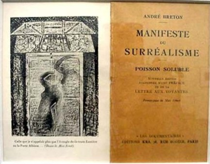

0rigenes
El término proviene del francés: surréalisme; sur ['sobre o por encima’] más réalisme ['realismo'].
Este movimiento surge después de la Primera Guerra Mundial, en Francia, específicamente en el año 1924, con la publicación del Primer Manifiesto Surrealista de André Breton.
Se esparce por Europa a pocos años de concluida la I Guerra Mundial hasta la llegada de la II guerra Mundial.
El Surrealismo propone una teoría de lo inconsciente y de lo irracional como medio para cambiar la vida, la sociedad, el arte y el hombre por medio de la revolución. No es un movimiento con unidad de estilo, sino una serie de artistas individuales, cada uno con un estilo propio. El movimiento tiene como base teórica la interpretación de los sueños de Freud, que rechaza la cultura tradicional basada en el poder de la razón; defiende la revolución de izquierdas y quiere desarrollar la crítica dadaísta del arte tradicional. Rompe con los convencionalismos sociales e incorpora la experimentación de los métodos del psicoanálisis en literatura y pintura; lo vemos en la escritura automática y los cadáveres exquisitos.
El término proviene del francés: surréalisme; sur ['sobre o por encima’] más réalisme ['realismo'].
Este movimiento surge después de la Primera Guerra Mundial, en Francia, específicamente en el año 1924, con la publicación del Primer Manifiesto Surrealista de André Breton.
Se esparce por Europa a pocos años de concluida la I Guerra Mundial hasta la llegada de la II guerra Mundial.
El Surrealismo propone una teoría de lo inconsciente y de lo irracional como medio para cambiar la vida, la sociedad, el arte y el hombre por medio de la revolución. No es un movimiento con unidad de estilo, sino una serie de artistas individuales, cada uno con un estilo propio. El movimiento tiene como base teórica la interpretación de los sueños de Freud, que rechaza la cultura tradicional basada en el poder de la razón; defiende la revolución de izquierdas y quiere desarrollar la crítica dadaísta del arte tradicional. Rompe con los convencionalismos sociales e incorpora la experimentación de los métodos del psicoanálisis en literatura y pintura; lo vemos en la escritura automática y los cadáveres exquisitos.

Tapa y contratapa de la primera edición del Manifiesto
Surrealista de Bretón.